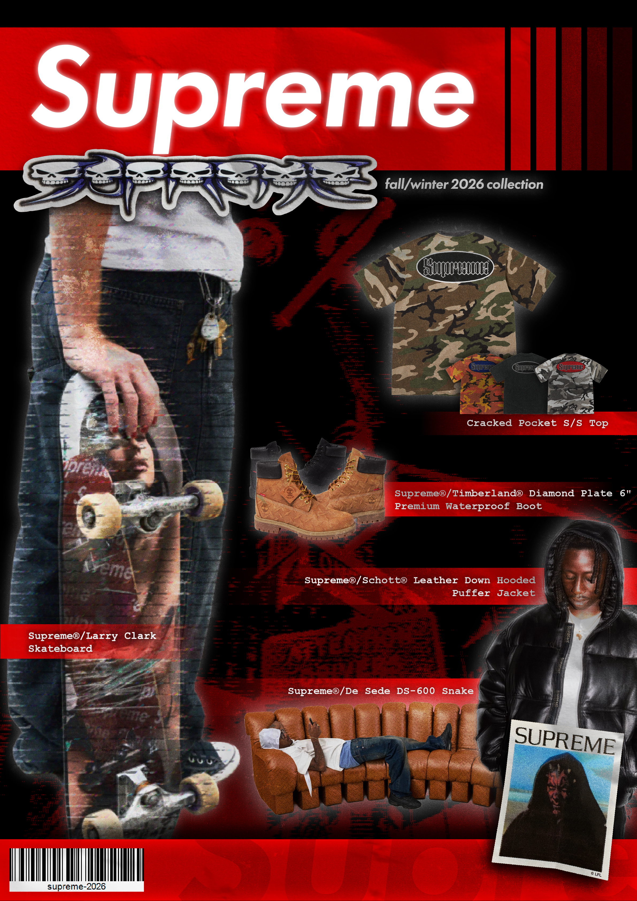

Ce projet est une affiche promotionnelle pour la marque de streetwear Supreme à l'occasion de la collection automne/hiver 2026. Mon objectif était de réinterpréter les codes visuels de la marque tout en affirmant ma patte graphique.
Le projet s'inspire directement des catalogues streetwear et des magazines de skate des années 2000 (skate mags, fanzines, presse Y2K). La composition repose sur un assemblage brut et déstructuré des pièces phares, enrichi d'une texture de papier froissé et d'effets visuels vintage (ombres portées marquées, lueurs, grain).
Pour ce qui est des couleurs, j'ai décidé d'utiliser le rouge vif emblématique de Supreme pour les étiquettes et les éléments principaux. Je l'ai associé à un fond noir pour contraster fortement avec le rouge et faire ressortir les produits grâce aux lueurs appliquées. Côté typographie, j'ai repris celles de la marque : la Futura (présente dans le logo) pour le titre, et la Courier New (utilisée sur leur site web) pour nommer les produits.